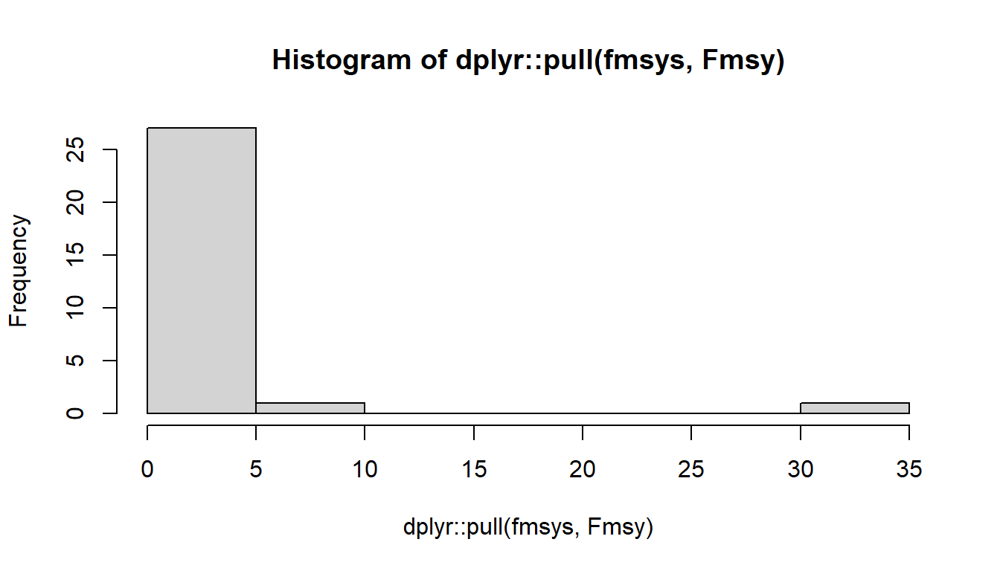
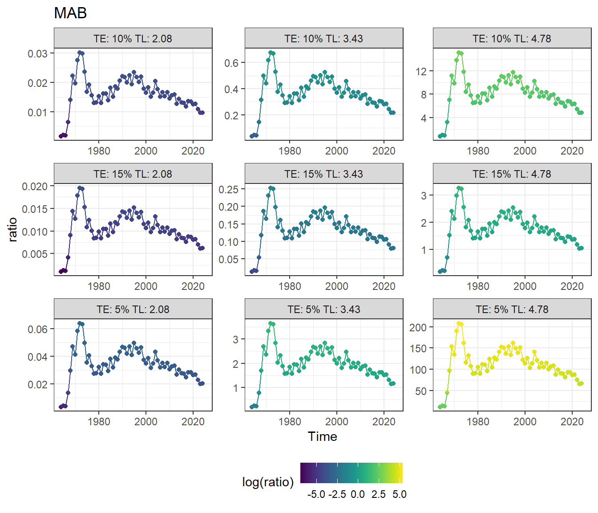
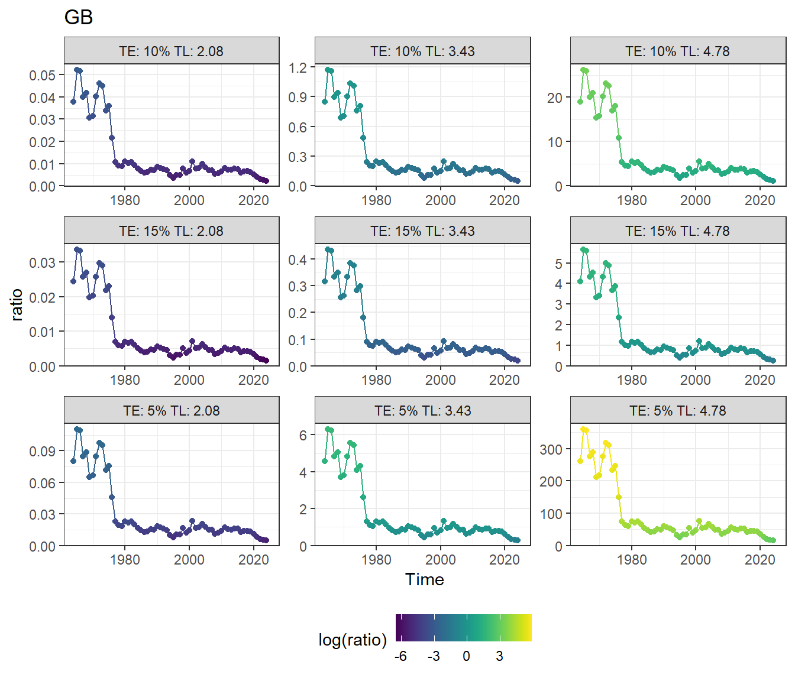
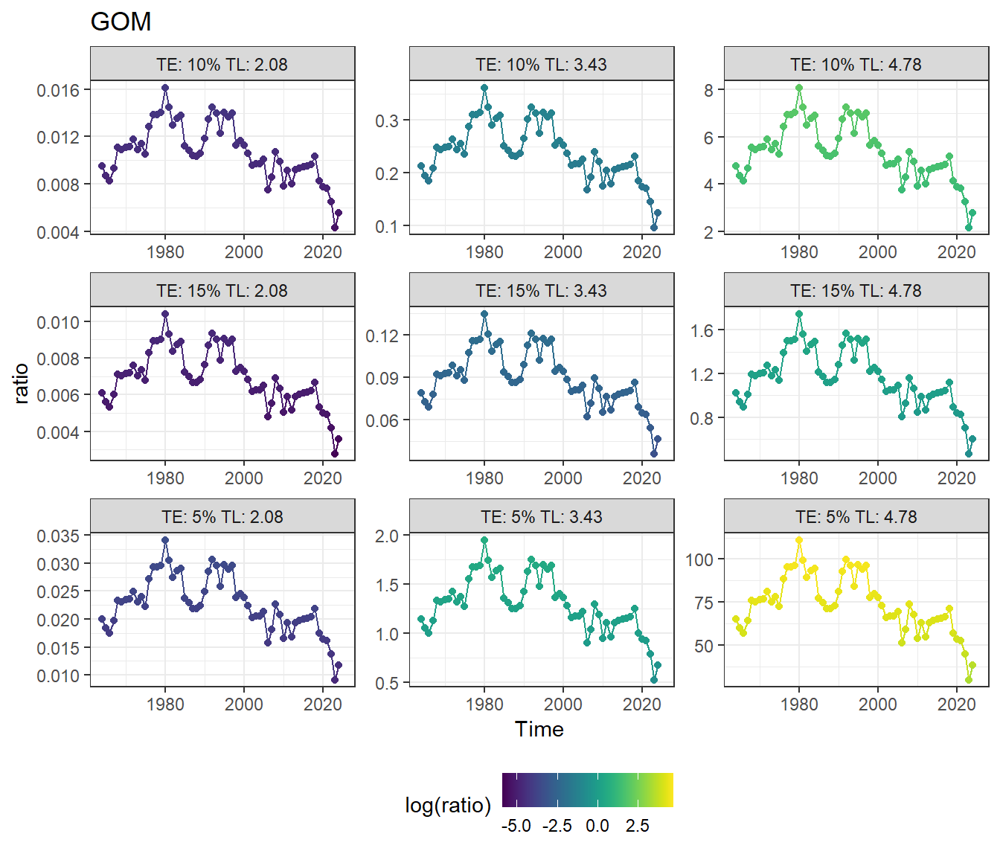

Code
knitr::opts_chunk$set(
fig.height = 4,
warning = FALSE,
message = FALSE
)This document explores ecosystem overfishing (following Pauly and Christensen 1995) in the Northeast US.
knitr::opts_chunk$set(
fig.height = 4,
warning = FALSE,
message = FALSE
)Regional primary production:
combined_pp <- ecodata::annual_chl_pp |>
dplyr::filter(Var == "PPD_ANNUAL_MTON") |>
dplyr::mutate(Time = as.integer(gsub("A_", "", Time))#,
# Source = "ecodata::annual_chl_pp"
) |>
dplyr::select(-Units, -Var) |>
dplyr::rename(annual_chl_pp = Value)
combined_pp |>
ggplot2::ggplot(ggplot2::aes(x = Time,
y = annual_chl_pp,
color = EPU)) +
ggplot2::geom_point() +
ggplot2::geom_line() +
ggplot2::theme_bw() +
ggplot2::theme(legend.position = "top") +
ggplot2::ylab("Regional primary production (MT carbon)")
Regional landings:
combined_landings <- ecodata::comdat |>
dplyr::filter(Var == "Landings") |>
dplyr::rename(landings = Value) |>
dplyr::select(-Var, -Units)
combined_landings |>
dplyr::filter(EPU %in% c("GB", "GOM", "MAB")) |>
ggplot2::ggplot(ggplot2::aes(x = Time, y =
landings,
color = EPU)) +
ggplot2::geom_point() +
ggplot2::geom_line() +
ggplot2::theme_bw() +
ggplot2::theme(legend.position = "top") +
ggplot2::ylab("Regional landings (MT wet weight)")
Trophic level by EPU is provided in Max’s Rpath models.
gb_tl <- neusRpath:::get_trophic_level(neusRpath::GB, epu_name = "GB")
gom_tl <- neusRpath:::get_trophic_level(neusRpath::GOM, epu_name = "GOM")
mab_tl <- neusRpath:::get_trophic_level(neusRpath::MAB, epu_name = "MAB")
trophic_data <- dplyr::bind_rows(gb_tl, gom_tl, mab_tl) |>
# dplyr::arrange(EPU, Trophic_Level)
tidyr::pivot_wider(names_from = EPU, values_from = Trophic_Level) |>
dplyr::rowwise() |>
dplyr::mutate(mean = mean(dplyr::c_across(c(GB, GOM, MAB)), na.rm = TRUE)) |>
dplyr::ungroup() |>
dplyr::arrange(mean)
trophic_data |>
# dplyr::select(-mean) |>
knitr::kable()| Species | GB | GOM | MAB | mean |
|---|---|---|---|---|
| Phytoplankton | 1.000000 | 1.000000 | 1.000000 | 1.000000 |
| Detritus | 1.000000 | 1.000000 | 1.000000 | 1.000000 |
| Bacteria | 2.000000 | 2.000000 | 2.000000 | 2.000000 |
| OceanQuahog | 2.080000 | NA | NA | 2.080000 |
| SurfClam | 2.080000 | NA | NA | 2.080000 |
| AtlScallop | 2.080000 | 2.118810 | 2.080000 | 2.092937 |
| SmCopepods | 2.183313 | 2.178565 | 2.258222 | 2.206700 |
| Microzooplankton | 2.318182 | 2.325803 | 2.333079 | 2.325688 |
| Macrobenthos | 2.362054 | 2.456037 | 2.353789 | 2.390627 |
| LgCopepods | 2.560390 | 2.416550 | 2.478886 | 2.485275 |
| Megabenthos | 3.015722 | 2.681287 | 2.472214 | 2.723074 |
| OtherShrimps | 2.633962 | 2.893465 | 2.686424 | 2.737950 |
| Micronekton | 2.932358 | 2.849715 | 2.877963 | 2.886679 |
| NShrimp | NA | 2.893465 | NA | 2.893465 |
| Krill | 2.932358 | 2.849715 | 2.908154 | 2.896743 |
| AmLobster | 3.005151 | 3.146498 | 2.969679 | 3.040443 |
| GelZooplankton | 3.113652 | 3.081594 | 3.249320 | 3.148188 |
| SmPelagics | 3.308538 | 3.171305 | 3.208577 | 3.229473 |
| AtlMenhaden | NA | NA | 3.260958 | 3.260958 |
| Mesopelagics | 3.362054 | 3.374620 | 3.388538 | 3.375071 |
| WitchFlounder | 3.373872 | 3.471207 | NA | 3.422540 |
| OceanPout | 3.441100 | 3.465008 | 3.368711 | 3.424939 |
| Scup | 3.378294 | NA | 3.476517 | 3.427405 |
| WinterFlounder | 3.433346 | 3.494027 | 3.377382 | 3.434918 |
| Other Dredge | 3.309365 | 3.681498 | 3.375435 | 3.455433 |
| AtlCroaker | NA | NA | 3.464684 | 3.464684 |
| SmFlatfishes | 3.409660 | 3.585291 | 3.415225 | 3.470059 |
| YTFlounder | 3.532325 | 3.510438 | 3.381731 | 3.474831 |
| AmPlaice | 3.597304 | 3.510559 | NA | 3.553932 |
| Clam Dredge | 3.082455 | 3.681287 | 3.900627 | 3.554790 |
| Haddock | 3.524854 | 3.655771 | NA | 3.590313 |
| AtlMackerel | 3.732652 | 3.653598 | 3.471674 | 3.619308 |
| LittleSkate | 3.658749 | 3.760183 | 3.544999 | 3.654644 |
| RiverHerring | 3.767309 | 3.617926 | 3.584465 | 3.656566 |
| HMS Fleet | 4.653306 | 5.351437 | 1.000000 | 3.668248 |
| AtlHerring | 3.569948 | 3.767350 | NA | 3.668649 |
| SouthernDemersals | 3.731375 | NA | 3.633901 | 3.682638 |
| OtherDemersals | 3.838845 | 3.624313 | 3.703968 | 3.722375 |
| Butterfish | 3.705983 | 3.872581 | 3.773587 | 3.784050 |
| Loligo | 3.849966 | 3.766669 | 3.742622 | 3.786419 |
| Illex | 3.905027 | 3.766669 | 3.770572 | 3.814089 |
| OtherCephalopods | 3.905027 | 3.766669 | 3.770572 | 3.814089 |
| OtherSkates | 3.663781 | 4.012041 | 3.839762 | 3.838528 |
| BlackSeaBass | 3.967472 | 3.947184 | 3.676659 | 3.863772 |
| SmoothDogfish | 4.016955 | 3.964905 | 3.614019 | 3.865293 |
| WinterSkate | 3.904391 | 4.001335 | 3.741776 | 3.882500 |
| Redfish | 3.771585 | 3.998903 | NA | 3.885244 |
| Windowpane | 3.936858 | 3.869096 | 3.870774 | 3.892243 |
| RedHake | 3.857811 | 4.050421 | 3.802729 | 3.903653 |
| Scallop Dredge | 3.935324 | NA | 3.882363 | 3.908844 |
| BaleenWhales | 4.138996 | 4.069637 | 4.075690 | 4.094774 |
| Weakfish | NA | NA | 4.097021 | 4.097021 |
| Other | NA | 4.758121 | 3.441865 | 4.099993 |
| Barndoor | 4.190274 | 4.037848 | NA | 4.114061 |
| Pollock | 4.096645 | 4.237621 | NA | 4.167133 |
| Cod | 4.145918 | 4.387166 | 3.974108 | 4.169064 |
| SpinyDogfish | 4.250792 | 4.389173 | 3.986730 | 4.208898 |
| SeaBirds | 4.335669 | 4.321566 | 4.084295 | 4.247177 |
| PurseSeine | NA | NA | 4.260958 | 4.260958 |
| SilverHake | 4.412718 | 4.267944 | 4.105408 | 4.262023 |
| Fourspot | 4.238478 | 4.229419 | 4.416911 | 4.294936 |
| Cusk | NA | 4.318015 | NA | 4.318015 |
| HMS | 4.352927 | 4.339670 | 4.276627 | 4.323074 |
| Trap | 4.330798 | 4.101466 | 4.578976 | 4.337080 |
| AtlHalibut | NA | 4.440707 | NA | 4.440707 |
| OtherPelagics | 4.689691 | 4.555107 | 4.223054 | 4.489284 |
| Bluefish | 4.692466 | NA | 4.458649 | 4.575557 |
| WhiteHake | 4.723828 | 4.532785 | NA | 4.628306 |
| SummerFlounder | 4.766620 | 4.823491 | 4.352038 | 4.647383 |
| Pinnipeds | 4.717434 | 4.772076 | NA | 4.744755 |
| Odontocetes | 4.823129 | 4.843218 | 4.639289 | 4.768545 |
| Goosefish | 4.831592 | 4.937234 | 4.558456 | 4.775761 |
| Sharks | 4.920587 | 4.966994 | 4.686325 | 4.857969 |
| LG Mesh | 4.866362 | 4.997942 | 4.790375 | 4.884893 |
| SM Mesh | 4.912816 | 4.931989 | 4.852638 | 4.899147 |
| Pelagic | 4.883345 | 4.958554 | 5.195321 | 5.012407 |
| Fixed Gear | 5.023484 | 5.244842 | 4.871390 | 5.046572 |
| Recreational | NA | NA | 5.250089 | 5.250089 |
upper_tl <- trophic_data |>
dplyr::filter(Species == "Goosefish") |>
dplyr::pull(mean) |>
round(digits = 2)
lower_tl <- trophic_data |>
dplyr::filter(Species == "OceanQuahog") |>
dplyr::pull(mean) |>
round(digits = 2)
mean_tl <- mean(c(upper_tl, lower_tl)) |>
round(digits = 2)The harvested species with the lowest trophic level is ocean quahog, with a trophic level of 2.08. The harvested species with the highest trophic level is goosefish, with a trophic level of 4.78. If we average the two, we get a mean trophic level of 3.43. Let’s try applying these ballpark numbers in our analyses below.
PPR is calculated using the coefficients from Pauly and Christensen (1995) – 10% transfer efficiency and mean trophic level of 3.5.
total_data <- dplyr::full_join(combined_pp, combined_landings) |>
dplyr::group_by(EPU) |>
dplyr::mutate(annual_chl_pp = ifelse(is.na(annual_chl_pp),
mean(annual_chl_pp, na.rm = TRUE), annual_chl_pp)) |>
dplyr::ungroup() |>
dplyr::mutate(
ppr = (landings / 9) * (1 / 0.10)^2.5,
ratio = ppr / annual_chl_pp
)First, simply plot PPR for the landings and primary production on the same scale:
total_data |>
dplyr::filter(EPU %in% c("GB", "GOM", "MAB")) |>
tidyr::pivot_longer(cols = c(ppr, annual_chl_pp), names_to = "Var", values_to = "Value") |>
ggplot2::ggplot(ggplot2::aes(x = Time, y = Value, color = Var)) +
ggplot2::geom_point() +
ggplot2::geom_line() +
ggplot2::theme_bw() +
ggplot2::facet_grid(rows = ggplot2::vars(EPU)) +
ggplot2::theme(legend.position = "top") +
ggplot2::ylab("MT carbon")
Plot the ratio of primary production required to total primary production:
total_data |>
dplyr::filter(EPU %in% c("GB", "GOM", "MAB")) |>
ggplot2::ggplot(ggplot2::aes(x = Time, y = ratio, color = EPU)) +
ggplot2::geom_point() +
ggplot2::geom_line() +
ggplot2::theme_bw() +
ggplot2::theme(legend.position = "top")
The difficulty with these calculations is that they rely on assumptions about transfer efficiency and trophic level. Additionally, the energetic accounting of how much primary production is “available” to be harvested as catch is complicated. A simple accounting of where energy goes:
knitr::include_graphics(here::here("data-raw/EOF energy accounting.png"))
Predators in the ecosystem need a certain amount of prey for their own diets. In addition to supporting the biomass caught and consumed, primary production also fuels the general functioning of the ecosystem, including supporting the biomass of non-harvested species and the metabolic needs of all organisms. A rough estimate is that up to 10% of primary production is sequestered in sediments, reducing the amount available to organisms.
Can we estimate the biomass needed for predation by comparing Fmsy to M?
fmsys <- stocksmart::stockAssessmentSummary |>
dplyr::filter(stringr::str_detect(`Regional Ecosystem`, "Northeast")) |>
dplyr::group_by(`Stock Name`) |>
dplyr::filter(`Assessment Year` == max(`Assessment Year`))
fmsys |>
dplyr::pull(Fmsy) |>
hist()
Not sure what is going on with silver hake (the high outlier) – going to drop…
fmsys |>
dplyr::filter(Fmsy < 5) |>
dplyr::pull(Fmsy) |>
hist()
Looks better, here’s the average:
fmsys |>
dplyr::filter(Fmsy < 5) |>
dplyr::pull(Fmsy) |>
mean(na.rm = TRUE)[1] 0.4514444Fs are reported in all different units, so just going to assume that everything is being fished at Fmsy. That gives us F = 0.45 and (assuming) M = 0.2, so M is 44% of the catch.
We can also assume that discards are 44% of the catch, per Pauly and Christensen.
Roughly, this means that an additional amount equivalent to the PPR is also needed to support the biomass of the catch (44% for discards, 44% for predation). So we would definitely want our PPR to be below 50% to be sustainable, because this calculation doesn’t incorporate numbers for metabolic needs of the organisms in the ecosystem or the biomass of non-harvested species. Pauly and Christensen give the qualitative description that 25% PPR is “high” (pg 256).
Let’s see how we’ve done relative to thresholds of 0.25 and 0.5:
total_data |>
dplyr::filter(EPU %in% c("GB", "GOM", "MAB")) |>
ggplot2::ggplot(ggplot2::aes(x = Time, y = ratio, color = EPU)) +
ggplot2::geom_point() +
ggplot2::geom_line() +
ggplot2::geom_hline(yintercept = 0.25, linetype = "dashed", color = "orange") +
ggplot2::geom_hline(yintercept = 0.5, linetype = "dashed", color = "red") +
ggplot2::theme_bw() +
ggplot2::theme(legend.position = "top")
Not great! Georges Bank was unequivocally overfished in the 1970s (discards were probably lower then, but still – PPR over 1 is not sustainable). The Mid-Atlantic has actually sustained the highest PPR over time, and recent declines could signify stress in the ecosystem (e.g., landing are being restricted because productivity is falling).
What could this data mean for the future? It looks like the Gulf of Maine and Georges Bank could potentially support more removals, though Georges Bank in particular may need more time to rebound from past overfishing. More research is needed to understand the additional metabolic energetic requirements and to determine the time scale of “bounce back” after overexploitation.
The system stores energy as standing biomass. When we harvest too much biomass, we are reducing the amount of energy stored in the system; if we are harvesting more than the system can replenish, we are depleting the energy stored in the system, and eventually we will have no energy left to harvest.
Let’s create a rough estimate of the energy stored in the system, relative to the first year in the time series. We can calculate this as the cumulative sum of how much energy was “overdrawn” per year. In other words, if 25% of the primary production is available for extraction through catch (according to the rough thresholds discussed above), then we are “overdrawing” when we take more than 25% of primary production in a given year. So we first calibrate our ratio by subtracting 0.25, and then take the cumulative sum.
cumulative_energy <- total_data |>
dplyr::filter(EPU %in% c("GB", "GOM", "MAB")) |>
dplyr::arrange(EPU, Time) |>
dplyr::mutate(overdrawn = ratio - 0.25) |>
dplyr::group_by(EPU) |>
dplyr::mutate(cumulative_overdrawn = cumsum(overdrawn))
cumulative_energy |>
ggplot2::ggplot(ggplot2::aes(x = Time,
y = cumulative_overdrawn,
color = EPU)) +
ggplot2::geom_point() +
ggplot2::geom_line() +
ggplot2::geom_hline(yintercept = 0, linetype = "dashed", color = "black") +
ggplot2::theme_bw() +
ggplot2::theme(legend.position = "top") +
ggplot2::ylab("Cumulative overdrawn energy (relative to 1964)")
Thoughts on looking at this graph…
test <- cumulative_energy |>
dplyr::filter(EPU == "GB",
Time > 1976)
model <- lm(cumulative_overdrawn ~ Time, data = test)First, Georges Bank had a cumulative extraction of more than 9x the annual primary production in the 1970s. Even though landings have been reduced since the 1970s, there is still a current deficit of approximately 7x the annual primary production. Looking at the slope from 1977 to present, the cumulative energy deficit is being repaid at 0.06 per year, which means it will take until the year 4118 to return to the biomass that the system had in 1964.
Second, the amount of extraction in the Gulf of Maine and the Mid Atlantic Bight in the 1960s appears to have been sustainable, in that we were not taking more biomass than was available each year through primary production. However, both regions have slowly built up a cumulative energy deficit over time, with the Mid Atlantic Bight now having the largest cumulative energy deficit out of all three regions, larger even than the debt that Georges Bank experienced during the crash of the groundfish stocks in the 1970s. The implications for the Mid Atlantic Bight could be concerning.
Even though these concepts are expressed relative to annual primary production, it would actually take 4 years for an amount of carbon equivalent to the annual primary production to be added back to the system. That’s because 75% of primary production goes to metabolism, predation, and sequestration, so only 25% of the annual primary production is able to be stored in organism biomass.
But does having this type of energy debt really matter? On one hand, as long as primary productivity continues, some portion of that productivity can be harvested. On the other hand, the energy stored in secondary production represents a suite of organisms of multiple ages classes that combine into a diverse ecosystem; the structure and function of a system with low energy debt may be different from that of a system with high energy debt. The organisms that we can harvest under high and low energy debt regimes may not be equivalently desirable.
How does this mesh with the guild biomass information that we present in the SOE? In all guilds and all regions, guild biomass is approximately equivalent to or higher than values from the 1970s (except for Georges Bank piscivores in the spring). So we are not seeing evidence of a depleted standing stock from the survey data. Is it possible that something is off in our survey analysis?
return_ppr <- function(landings, pp, te, tl) {
ppr = (landings / 9) * (1 / te)^(tl -1)
ratio = ppr / pp
return(ratio)
}
total_data2 <- total_data |>
dplyr::filter(EPU %in% c("GB", "GOM", "MAB")) |>
dplyr::mutate(
ratio_te5_tl_lower = return_ppr(landings, annual_chl_pp, te = 0.05, tl = lower_tl),
ratio_te5_tl_mean = return_ppr(landings, annual_chl_pp, te = 0.05, tl = mean_tl),
ratio_te5_tl_upper = return_ppr(landings, annual_chl_pp, te = 0.05, tl = upper_tl),
ratio_te10_tl_lower = return_ppr(landings, annual_chl_pp, te = 0.1, tl = lower_tl),
ratio_te10_tl_mean = return_ppr(landings, annual_chl_pp, te = 0.1, tl = mean_tl),
ratio_te10_tl_upper = return_ppr(landings, annual_chl_pp, te = 0.1, tl = upper_tl),
ratio_te15_tl_lower = return_ppr(landings, annual_chl_pp, te = 0.15, tl = lower_tl),
ratio_te15_tl_mean = return_ppr(landings, annual_chl_pp, te = 0.15, tl = mean_tl),
ratio_te15_tl_upper = return_ppr(landings, annual_chl_pp, te = 0.15, tl = upper_tl),
) |>
tidyr::pivot_longer(cols = starts_with("ratio"), names_to = "method", values_to = "ratio") |>
dplyr::filter(method != "ratio") |>
dplyr::mutate(transfer_efficiency = dplyr::case_when(
grepl("te5", method) ~ "5%",
grepl("te10", method) ~ "10%",
grepl("te15", method) ~ "15%"
),
trophic_level = dplyr::case_when(
grepl("tl_lower", method) ~ lower_tl,
grepl("tl_mean", method) ~ mean_tl,
grepl("tl_upper", method) ~ upper_tl
)) for (i in c("MAB", "GB", "GOM")) {
plt <- total_data2 |>
dplyr::filter(EPU == i) |>
ggplot2::ggplot(ggplot2::aes(x = Time, y = ratio, color = log(ratio))) +
ggplot2::geom_point() +
ggplot2::geom_line() +
ggplot2::theme_bw() +
ggplot2::facet_wrap(facets = ggplot2::vars(paste("TE:", transfer_efficiency,
"TL:", trophic_level)),
scales = "free") +
ggplot2::theme(legend.position = "bottom") +
viridis::scale_color_viridis(discrete = FALSE) +
ggplot2::ggtitle(i)
print(plt)
}


Assuming a 44% buffer for discards (as in Pauly and Christensen, Table 2):
for (i in c("MAB", "GB", "GOM")) {
plt <- total_data2 |>
dplyr::filter(EPU == i) |>
ggplot2::ggplot(ggplot2::aes(x = Time, y = ratio * 1.44, color = log(ratio * 1.44))) +
ggplot2::geom_point() +
ggplot2::geom_line() +
ggplot2::theme_bw() +
ggplot2::facet_wrap(facets = ggplot2::vars(paste("TE:", transfer_efficiency,
"TL:", trophic_level)),
scales = "free") +
ggplot2::theme(legend.position = "bottom") +
viridis::scale_color_viridis(discrete = FALSE) +
ggplot2::ggtitle(i)
print(plt)
}